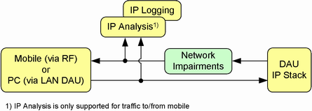

The DAU allows you to simulate network impairments for any outgoing IP traffic. You can, for example, impair traffic from the DAU to a DUT or traffic from the DAU to a host reachable via the LAN DAU connector.

The DAU applications "IP Analysis/Security" and "IP Logging" monitor the outgoing traffic after the network impairments have been applied. They have no information about the unimpaired traffic.
To recognize a retransmitted packet, the IP analysis application must receive both the initially transmitted packet and the retransmitted packet. If the initially transmitted packet is lost after passing the application, the retransmitted packet is counted correctly by the IP analysis application. Example: packet loss on the RF connection to a DUT. If the initially transmitted packet is lost before passing the application, the retransmitted packet is counted as initial transmission, not as retransmission. Example: packet loss rate configured as network impairment. In the latter case, you can use the IP logging application to analyze the retransmissions, for example by checking for retransmission requests. |
The network impairments functionality of the DAU is based on the netem Linux kernel module (see http://www.linuxfoundation.org/collaborate/workgroups/networking/netem).
For configuration and control of network impairments, see "Quality-of-Service Settings".
The following sections illustrate the effect of the individual network impairment settings.